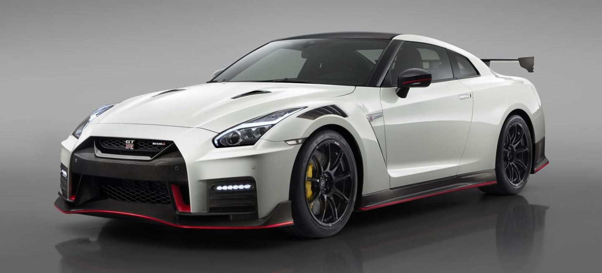

CARROS DEPORTIVOS MÁS POPULARES
Entre los carros más populares podemos mencionar los siguientes:
Koenigsegg Agera RSN
El Koenigsegg Agera es un automóvil superdeportivo biplaza Targa Top de 2 puertas diédricas, con motor central-trasero montado longitudinalmente y tracción trasera, producido desde 2011 hasta 2018 por el fabricante sueco Koenigsegg, casa que diseña automóviles exclusivos.
Bugatti Veyron
El Bugatti Veyron es un automóvil superdeportivo biplaza diseñado y desarrollado por el Grupo Volkswagen y producido en Molsheim (Alsacia, Francia), por el fabricante Bugatti Automobiles S.A.S. desde 2005 hasta 2015.
Nissan GT-R 35
Es un automóvil deportivo gran turismo cupé 2+2 con motor delantero montado longitudinalmente y tracción en las cuatro ruedas, producido por el fabricante japonés Nissan, lanzado en Japón el 6 de diciembre de 2007, en Estados Unidos el 7 de julio de 2008 y en el resto del mundo en marzo de 2009.
McLaren P1

Es un automóvil superdeportivo híbrido eléctrico enchufable de edición limitada, producido por el fabricante automotriz británico McLaren Automotive de 2013 hasta principios de diciembre de 2015. Tiene carrocería cupé biplaza de dos puertas diédricas, motor central-trasero montado longitudinalmente y tracción trasera.
Lamborghini Veneno
Es un automóvil superdeportivo de dos puertas de tijera biplaza, con motor central-trasero montado longitudinalmente y de tracción en las cuatro ruedas, producido por fabricante italiano Automobili Lamborghini S.p.A. de 2013 a 2014.